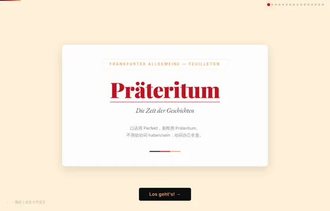
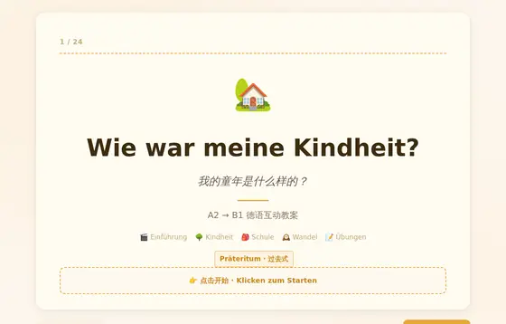
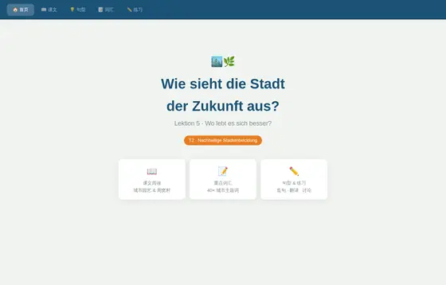

课文 · 文学
2 个语言点 · 互动课堂
4 个
Präteritum · Die Zeit der Geschichten
过去时专题：两种语言两个世界 → 自己发现规律 → 陷阱警示 → 五周 Notfall-Karten 应急卡。
Reflexive Verben · Berlin, reflexiv
反身动词专题：代词填空、完整对照表、真反身与假反身、sich 的位置规则（含从句）、一天柏林情景。

Wie war meine Kindheit?
童年主题互动教案：词汇卡片翻看 + 分页练习，德汉对照，可课堂投屏使用。

Wie sieht die Stadt der Zukunft aus?
未来城市互动课：首页 / 课文 / 句型 / 词汇 / 练习五段式，词汇按城市结构、人物社会、自然园艺、动词分组。